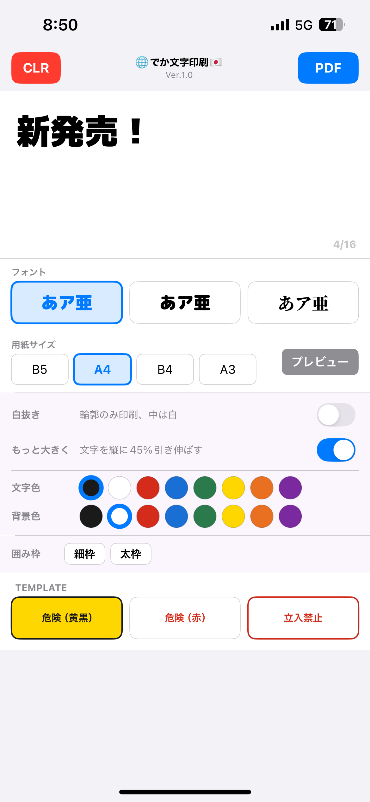
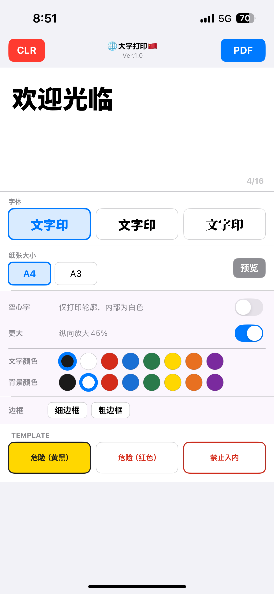
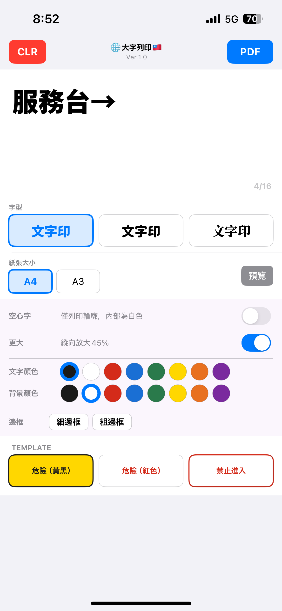
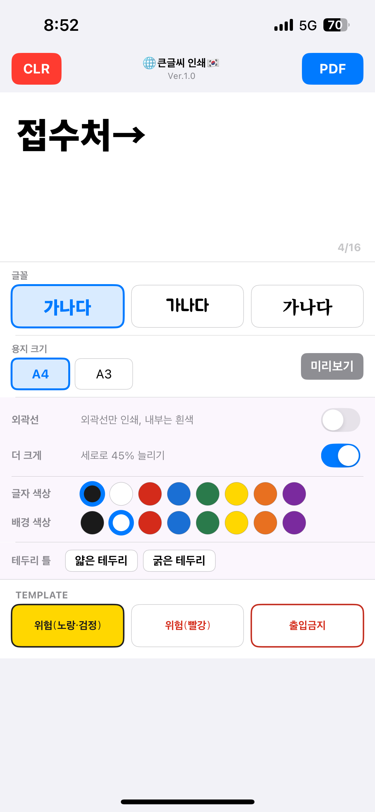

lamiliuq works
Large Sign PDF Maker
入力した文字を1文字ずつ大きく配置したPDFを作成するiPhoneアプリ。学校・イベント・店舗・自治会の案内表示を、すばやく作れます。

iPhone 実機画面
緊急時にお使いください。タップですぐにPDFを作成し、プリンターと共有できます。
lamiliuq works
Large Sign PDF Maker
将输入的文字逐字放大排版，生成PDF的iPhone应用。快速制作学校、活动场所、店铺、社区的引导标识。

iPhone 实机画面
紧急情况下请使用。轻触即可立即创建PDF并与打印机共享。
lamiliuq works
Large Sign PDF Maker
將輸入的文字逐字放大排版，生成PDF的iPhone應用程式。快速製作學校、活動場所、店鋪、社區的引導標示。

iPhone 實機畫面
緊急情況下請使用。輕觸即可立即建立PDF並與印表機共享。
lamiliuq works
Large Sign PDF Maker
입력한 글자를 한 글자씩 크게 배치한 PDF를 생성하는 iPhone 앱. 학교·행사·가게·마을 안내 표시를 빠르게 만들 수 있습니다.

iPhone 실제 화면
긴급 상황에서 사용하세요. 탭 한 번으로 즉시 PDF를 생성하여 프린터와 공유할 수 있습니다.